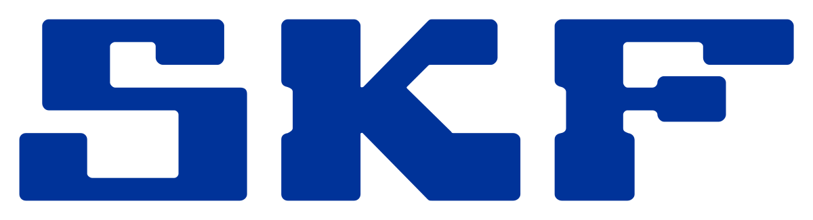

Многое мы воспринимаем как должное. Мы рассчитываем на трамваи, поезда метро и автобусы, которые обеспечивают безопасное и стабильное перемещение в черте городов и между ними. Мы доверяем водоочистным сооружениям, которые поставляют нам питьевую воду, и верим, что пищевая промышленность защитит нас от аллергенов и бактерий. Мы ожидаем, что ветряные электростанции будут обеспечивать работу приборов освещения, а автомобили будут электрическими. Существуют миллионы других потребностей — и всё это обеспечивает наша планета.
В мире, который формируется под влиянием роста численности населения, урбанизации, цифровизации и экологических проблем, промышленная реальность — это настоящий вызов. И именно в этой реальности находится компания SKF, в самом её центре, обеспечивая надёжные эксплуатационные характеристики оборудования для реального мира.
Мы обладаем профессиональными знаниями и практическим опытом в области разработки, проектирования и изготовления подшипников, уплотнений и систем смазывания. Также мы обеспечиваем оценку состояния машин, предоставляем технические средства обеспечения надёжности и услуги по восстановлению. Но самое важное предложение SKF — это поле для инноваций. Открытое пространство, в котором наши клиенты могут использовать инструментальные средства для исследования, улучшения или переосмысления эксплуатационных характеристик своего оборудования. Здесь даже небольшие корректировки могут обуславливать значительные изменения в промышленной реальности.
Узнайте больше о наших предложениях.
Компания SKF предлагает несколько областей, в которых вы можете проявить себя. Основным направлением нашей деятельности является производство, но знаете ли вы о том, что цифровизация, автоматизация и технологии искусственного интеллекта также играют важную роль в нашей стратегии роста?
Наши талантливые сотрудники лучше всех поведают о том, какова повседневная жизнь в SKF — как она насыщена инновациями, разнообразными бизнес-задачами и какое влияние она оказывает на общество.
Наш штат насчитывает более 40 000 специалистов, которые ставят перед собой сложные задачи и проявляют лидерские качества для реализации собственного потенциала во всех уголках мира. У нас богатая культура, наполненная знаниями, разнообразием и инновациями. Где бы ни двигался мир, будь то заводы, дороги или путь в будущее, вы найдёте нас там. Наши коллеги с радостью расскажут о том, как мы делаем современный мир таким, каким вы его знаете.